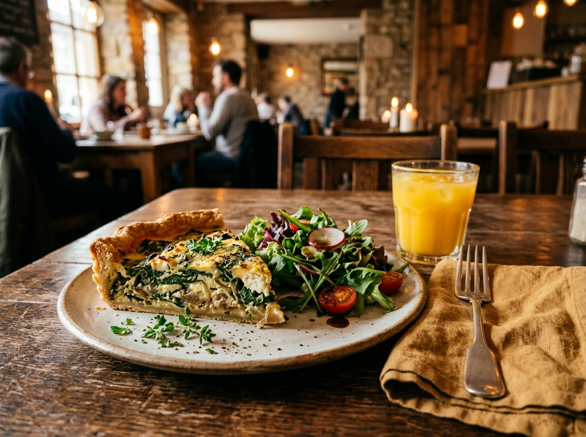
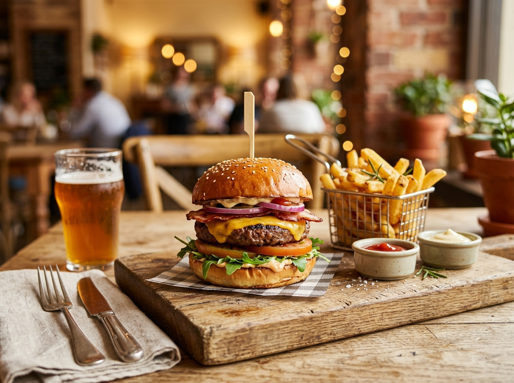
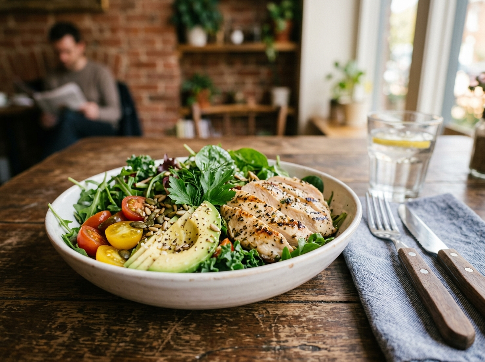
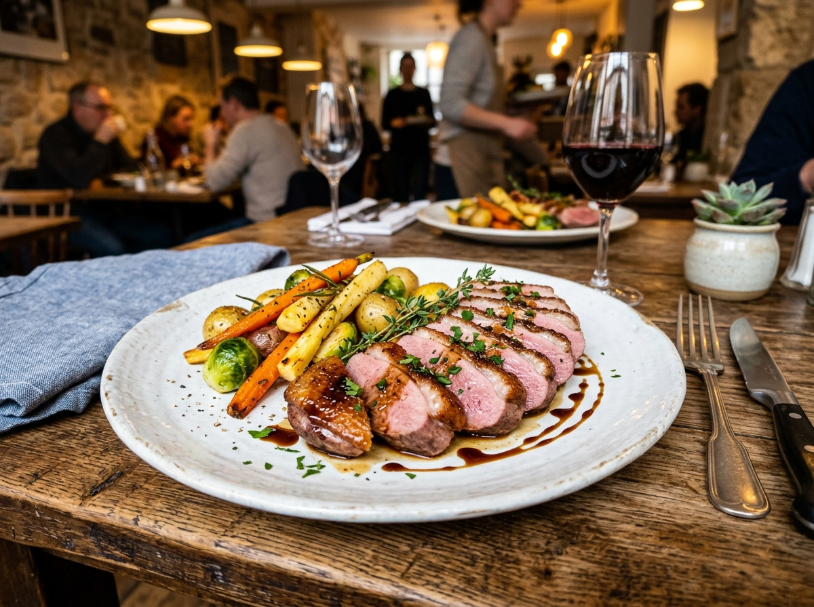
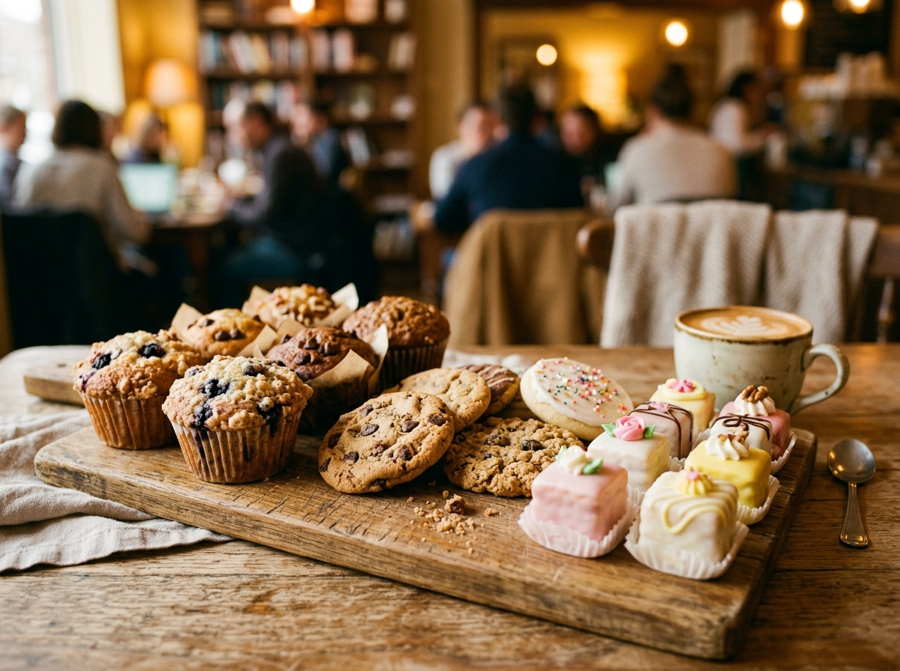
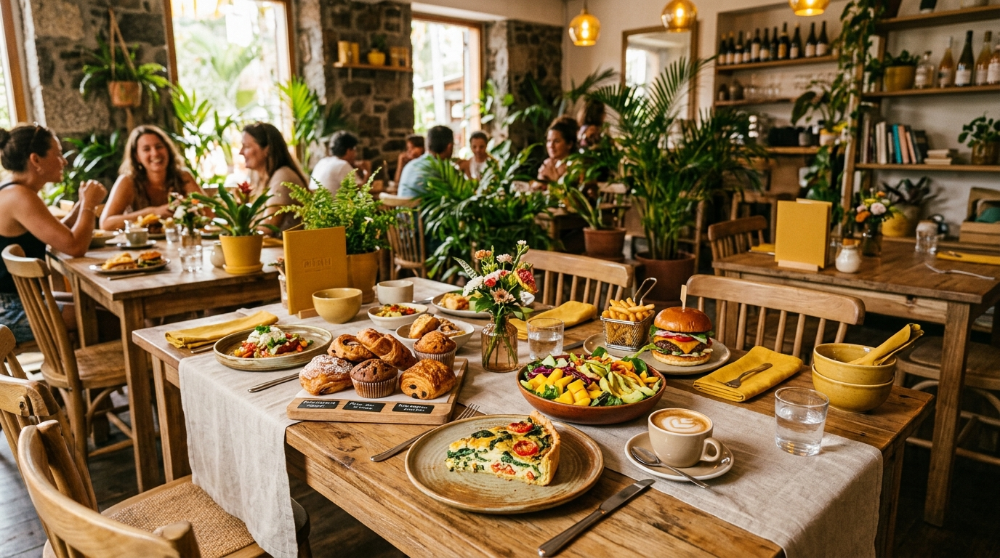

Une carte courte mais savoureuse, renouvelée régulièrement pour vous offrir le meilleur de la saison.

Chorizo, légumes du marché, poulet-jambon… Dorées à souhait, croustillantes à l'extérieur, fondantes à l'intérieur.

Pain boulanger, viande fraîche, garnitures généreuses et sauces maison. Le burger comme il se doit.

Produits frais, mélanges croquants et vinaigrettes maison. L'option légère et gourmande pour le déjeuner.

Magret cuit rosé, accompagné de légumes de saison. Un classique revisité avec une touche réunionnaise.

Cookies fondants, muffins moelleux, mignardises… Le final parfait pour un déjeuner au Café Moutarde.

Poisson frais mariné, avocat péi onctueux, assaisonnement aux agrumes. Un voyage tropical dans l'assiette.
Appelez-nous et récupérez votre repas 100% fait maison, prêt en quelques minutes.